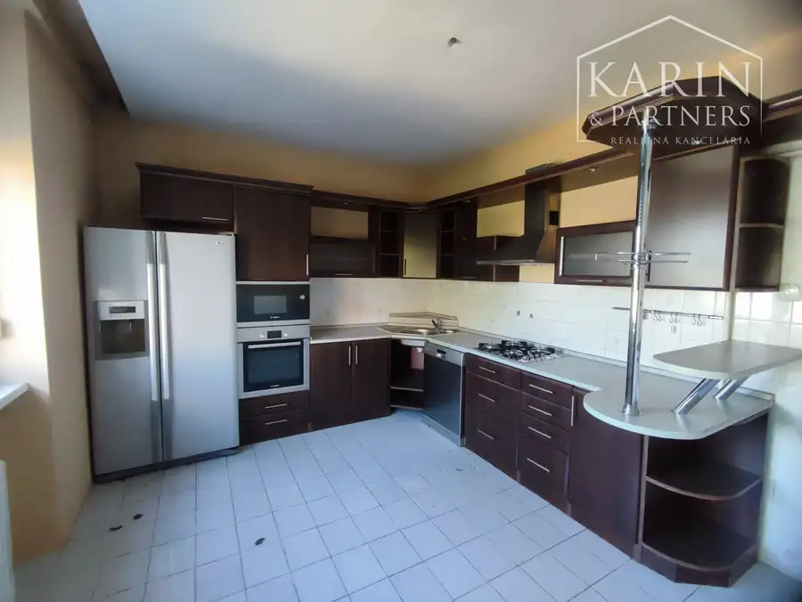
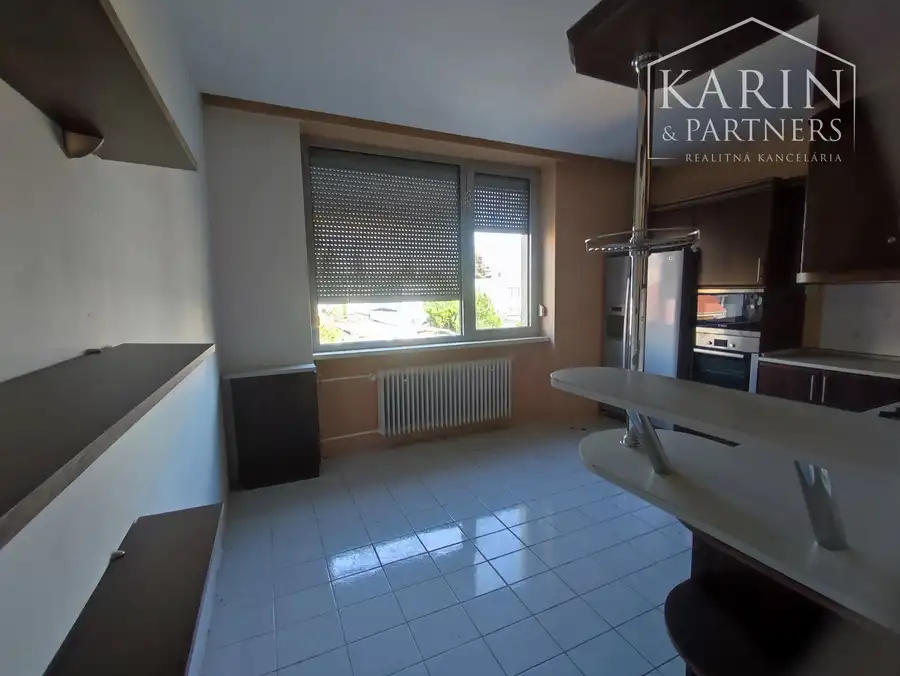
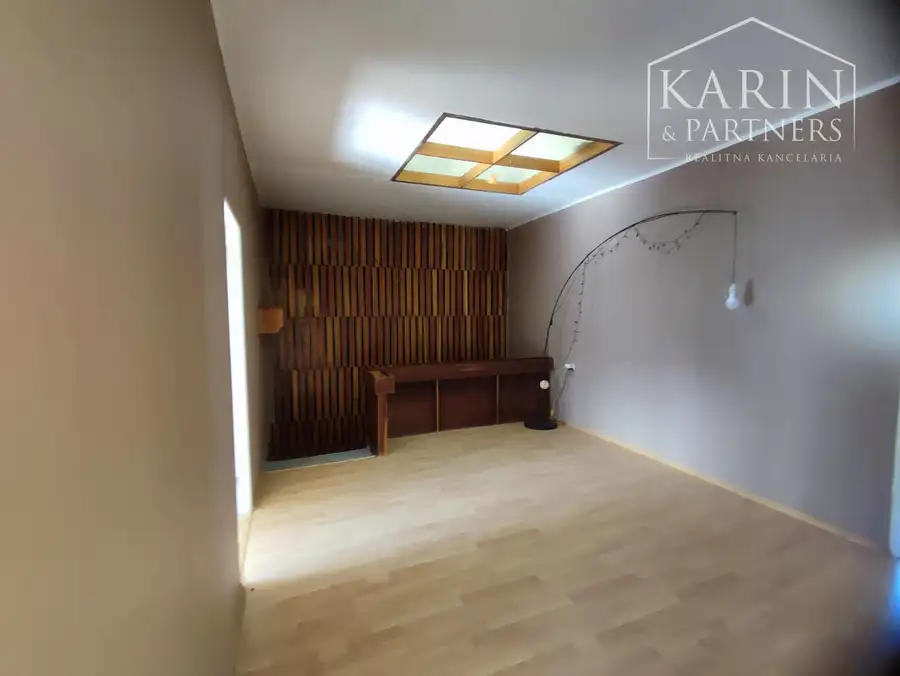
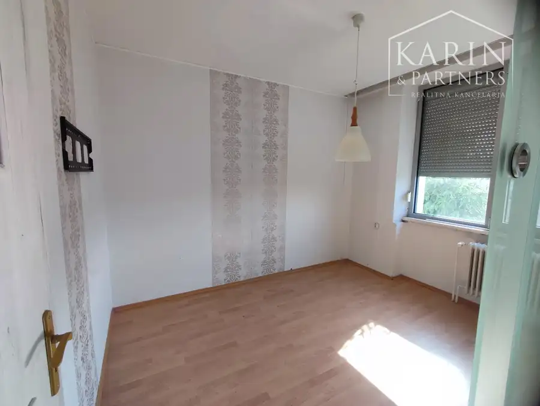
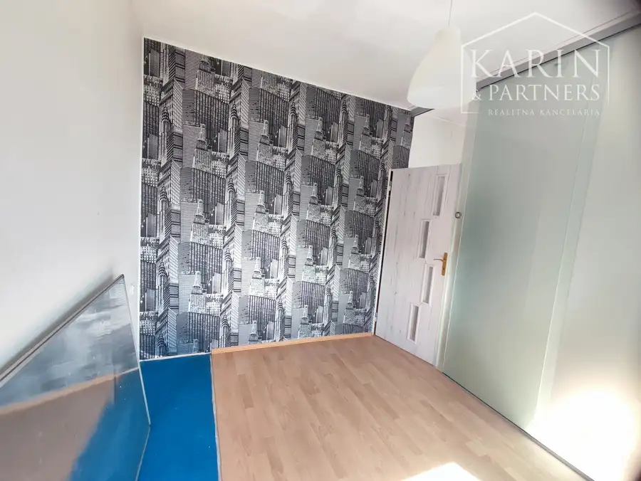
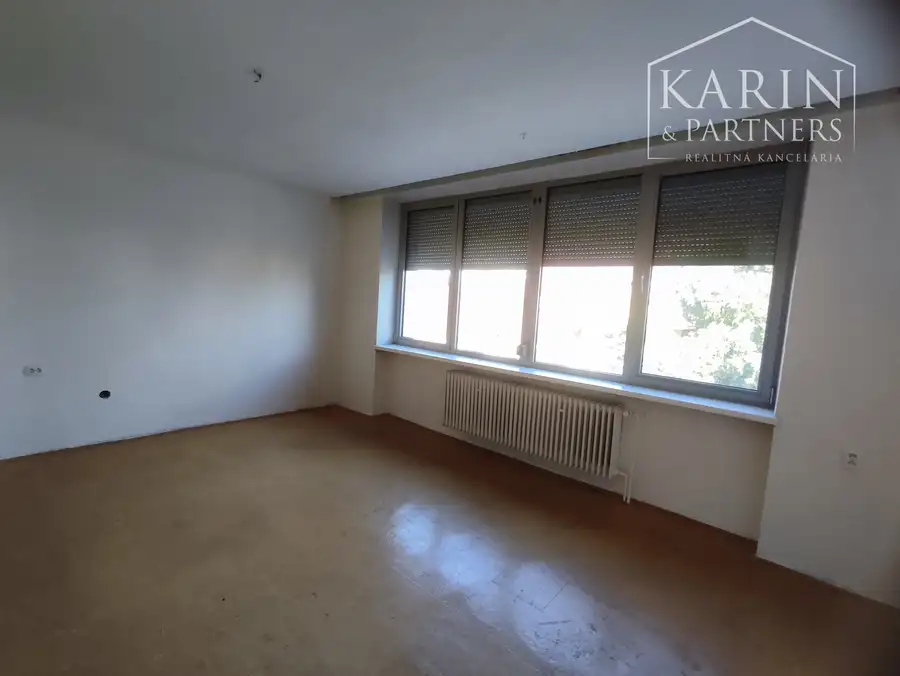
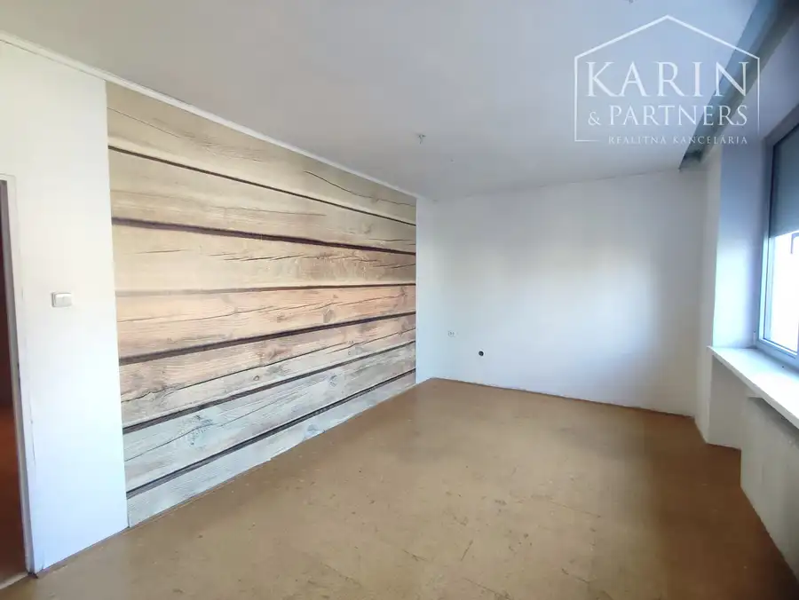

*Výhodná ponuka* Veľký poschodový rodinný dom s dvomi garážami, v oblúbenej pokojnej lukratívnej lokalite, Nové Zámky
Nové Zámky








- Plocha340 m²
- StavČiastočná rekonštrukcia
- VlastníctvoOsobné
O nehnuteľnosti
**Výhodná ponuka:**Na predaj rodinný dom vhodný pre väčšiu rodinu, na čiastočný prenájom alebo ako dvojgeneračný v oblúbenej pokojnej lokalite v Nových Zámkoch. Bohate priestorovo riešený rodinný dom bol zateplený, má 7 izieb, fasáda bola pokrytá hliníkovou a keramickou krytinou, vymenené hliníkové vchodové dvere, viackomorové hliníkové okná s vonkajšími hliníkovými roletami na 1. poschodí a vonkajšie hliníkové rolety sú na oknách v celom dome. Nehnuteľnosť je podpivničená, má 2 nadzemné podlažia a plochú strechu. Všetky inžinierske siete: voda, elektrina, plyn. Úžitková plocha je cca 340 m2. K domu prislúcha aj samostatná garáž.DISPOZÍCIA RODINNÉHO DOMU:Dom sa skladá zo suterénu, prízemia a poschodia.Suterén:- schodisko- miestnosť- sklad- veľká garáž pre dve menšie autá, alebo autá strednej triedy- dieľňa- izba (kotolňa) s plynovým kotlom ústredného vykurovania s TÚV- práčovňa /so staršou saunou, malým bazénom a sprchovacím kútom/Prízemie:- vstupná predstieň- šatník- toaleta s umývadlom- veľká obývacia miestnosť s KRBOM, so vstupnom do zadnej časti: na terasu a záhradu- kuchyňa s jedálenskou časťou (miestnosťou)- špajza + priechodzia miestnosť 2ks umyvadlo- priestranná klimatizovaná miestnosť /slnečná strana/Poschodie:- chodba/vstupná priestranná hala- 3 miestnosti (z jednej vstup na balkón)- kuchyňa s jedálňou- kúpeľna s vaňou a toaletouDom má 2 kupeľne, 2 toalety a 2 kuchyne. V kuchyni na poschodí je nová kuchynská linka so zabudovanými spotrebičmi /elektrický sporák s varnou doskou+digestor, elektrická rúra, mikrovlnka/, umývačkou riadu a veľkou americkou chladničkou. Kúrenie je ústredné na plyn – plynový kotol a centrálnym krbom v obývacej miesnosti. V miestnostiach sú bukové parkety, keramická a mramorová dlažba. Zastavaná plocha je cca 116 m2. Pozemok je rovinatý, slnečný. Nachádza sa na ňom aj zimná záhrada (skleník). Rozloha cca 405 m2. Parkovanie je možné v jednej z dvoch garáží, priamo vo dvore pred domom na pozemku, alebo na ulici. Brána na pozemok, ako aj garážová brána sú eletkrické na ďiaľkové ovládanie. VÝHODY:+ Veľký poschodový rodinný dom s dvomi garážami, možnosť využiť ako 2generačný, alebo časť prenajať + Obľúbená lokalita poskytujúca kľud, ticho, zároveň dostupnosť k prírode a aj do centra mesta+ Pekné priestranné miestnosti+ V dome už prebehla čiastočná rekonštrukcia+ Všetky inžinierske siete+ Napojený na verejnú kanalizáciu+ KRB, terasa, zimná záhrada (skleník), 2x kuchyňa, 2 kúpeľna, 2x WC+ Nosné steny z tvárnic hrúbky 400 mm, múry a priečky z tehál+ Rodinný dom je zateplený+ Viaceré možnosti parkovania /až 5 parkovacích miest/CENA:229.900 €V cene sú zahrnuté:- komplexné právne a katastrálne služby spojené s prevodom nehnuteľnosti vrátane poplatku za kataster; ich rozsah tu: https://www.karinpartners.sk/pravne-sluzby - profesionálne a rýchle vybavenie hypotekárneho úveru; rozsah fin. služieb tu: https://www.karinpartners.sk/financne-sluzby KONTAKT:Ing. Richard Klučiar+421 907 561 191kluciar@karinpartners.sk
Parametre
- Druh
- Rodinný dom
- Dátum zverejnenia
- 02. 06. 2025
- Plocha pozemku
- 405 m²
- Stav nehnuteľnosti
- Čiastočná rekonštrukcia
- Typ
- Predaj
- Vlastníctvo
- Osobné
- Vybavenie
- Balkón, Terasa, Garáž, Pivnica, Verejné parkovanie, Špajza, Sklad, Technická miestnosť
- Zastavaná plocha
- 116 m²
- Úžitková plocha
- 340 m²
Kde to je


Mohlo by Vás zaujímať
 PozemokNové
27 900 €Znížená cena: Stavebný pozemok, obec Čechy
Čechy
1200 m²
PozemokNové
27 900 €Znížená cena: Stavebný pozemok, obec Čechy
Čechy
1200 m²
 DomNové
324 000 €Exkluzívne Iba u Nás: Rodinná rezidencia v štýle haciendy: 2 samostatné domy, bazény, okrasná záhrada a dokonalé súkromie | Semerovo
Semerovo
290 m²
DomNové
324 000 €Exkluzívne Iba u Nás: Rodinná rezidencia v štýle haciendy: 2 samostatné domy, bazény, okrasná záhrada a dokonalé súkromie | Semerovo
Semerovo
290 m²
 BytNové
Cena na vyžádáníPrenájom 2-izbového bytu v tehlovej bytovke - novostavba – Nové Zámky
Nové Zámky
2-izbový55 m²
BytNové
Cena na vyžádáníPrenájom 2-izbového bytu v tehlovej bytovke - novostavba – Nové Zámky
Nové Zámky
2-izbový55 m²